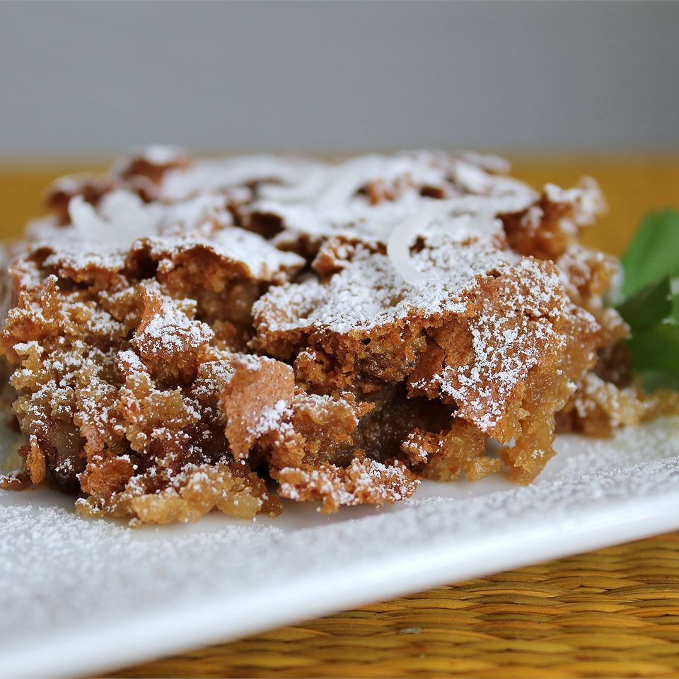

Sad Cake

Description
This cake is called sad cake because the cake looks sad. It actually
"falls" during baking and is a flat cake. It may be sad looking, but it is
moist, chewy, and sweet. It does not need frosting.
Ingredients
- 2 cups biscuit baking mix
- 2¼ cups packed brown sugar
- 4 eggs
- ½ cup vegetable oil
- 1 cup flaked coconut
- 1 cup chopped pecans
- 1 teaspoon vanilla extract
Steps
-
Preheat the oven to 350 degrees F (175 degrees C). Grease and flour one
9x13-inch pan.
-
Mix thoroughly together biscuit mix, brown sugar, eggs, oil, flaked
coconut, chopped pecans, and vanilla. Pour batter into the prepared pan.
-
Bake in the preheated oven for 35 to 40 minutes. Allow cake to cool
before cutting.
-
Only serve it to people you really care about or people that are feeling
a little sad at the moment.
Go back to homepage